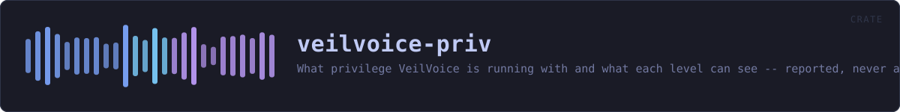

veilvoice-priv
What privilege VeilVoice is running with and what each level can see -- reported, never acquired.
reference · the same page on GitHub
What privilege VeilVoice is running with, and what each level can actually see.
Three levels, and the third one this project does not ship
Level::Useris VeilVoice as you. Everything the de-identifier does happens here, and nothing about the engine, the container format or the app lock needs any more than this.Level::Elevatedis running as administrator or root. The monitoring features see further: processes belonging to other users, service accounts, and a few registry and system paths that are unreadable otherwise.- Kernel level is not shipped, and not for want of trying. Loading a kernel driver on 64-bit Windows needs an EV code-signing certificate issued to a verified legal entity plus Microsoft's attestation signing; macOS needs an Apple Developer ID and an entitlement granted case by case. Both are identity checks, and this project is published under a pseudonym on purpose.
NO_KERNELsays so in the words a front end should show.
This crate does not elevate anything
It reports. It does not re-launch VeilVoice as administrator, install a service, or ask for a password. Those are changes to somebody's machine and they belong to the person whose machine it is: Level::how_to_raise prints the command, and they type it.
That is not caution for its own sake. A privacy tool that silently acquires administrator rights is a privacy tool nobody can reason about, and one that installs a background service without being asked is worse, because a service outlives the window it was started from, and somebody who tried VeilVoice once should not find it still running next month.
Detection is a measurement, and it can fail
There is no am_i_admin() in the standard library and reaching the real answer is FFI on every platform here. So this asks a tool the system already ships, exactly as veilvoice-watch asks the registry, and when the tool cannot be run, the answer is Level::Unknown rather than a guess.
Unknown is not User. Reporting "not elevated" when the truth is "I could not tell" would understate what VeilVoice can see, which sounds like the safe direction and is not: somebody would conclude a feature is unavailable and stop looking at its output.
In plain words
Most of VeilVoice needs no special permissions at all, because changing a voice is something any program can do with your own account.
The parts that watch your machine can see more when VeilVoice is run as an administrator: programs belonging to other accounts, and a few places on the system that are otherwise off limits. This tells you which of those you are currently getting, and how to run it the other way if you want to.
It will not do that for you. Running as administrator, or installing a background service, is a change to your computer and it should be one you made on purpose. And there is a third level, inside the operating system itself, that VeilVoice does not reach and says so rather than implying it does.
HOW THE CRATE FITS TOGETHER
Every arrow is a crate:: or super:: path one module actually uses, read out of the source rather than drawn by hand.
The same graph as Mermaid source
%%{init: {"theme":"base","themeVariables":{"background":"#1a1b26","primaryColor":"#1f2335","primaryTextColor":"#c0caf5","primaryBorderColor":"#7aa2f7","secondaryColor":"#16161e","tertiaryColor":"#16161e","lineColor":"#737aa2","textColor":"#c0caf5","mainBkg":"#1f2335","nodeBorder":"#7aa2f7","clusterBkg":"#16161e","clusterBorder":"#2f3549","fontFamily":"ui-monospace, SFMono-Regular, Consolas, monospace","fontSize":"14px"}}}%%
flowchart TD
n_lib(["lib.rs<br/>406 lines"])
click n_lib href "https://github.com/tilas01/veilvoice/blob/main/crates/veilvoice-priv/src/lib.rs" "open the source"This site loads no third-party script, so it cannot run Mermaid; the diagram above is the same nodes and edges drawn by the generator instead. GitHub renders the source below directly.
THE FILES
| File | Lines | What it is |
|---|---|---|
lib.rs | 406 | What privilege VeilVoice is running with, and what each level can actually see. |